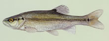

Image Credit: John Woodling, CDOW
|
|
|
Family: Cyprinidae - Minnows |
|  |
|
AFR=8, BR=, DFR=8, LLS=53-61 PC= PT=2,5-4,2; 2,4-4,2; 2,4-5,2 |
| large, terminal mouth; small barbel present; spot at anterior insertion of dorsal fin; juveniles: dark lateral band and spot on tail |
| Sport Fish: No Prohibited: Not Known Origin: Native Status: Not Known |
|
Image Credit: John Woodling, CDOW |
|
|